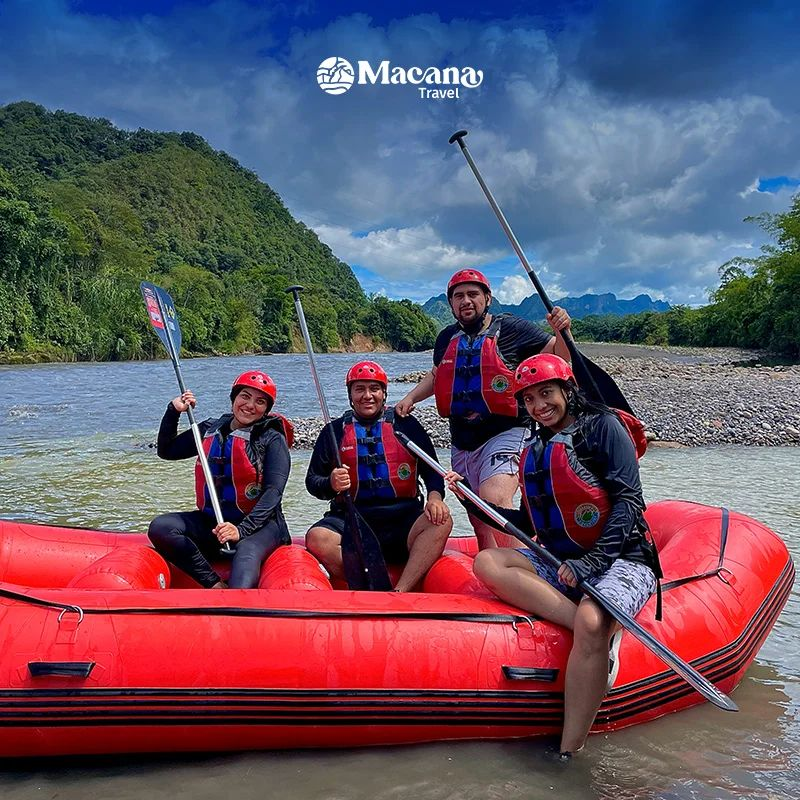
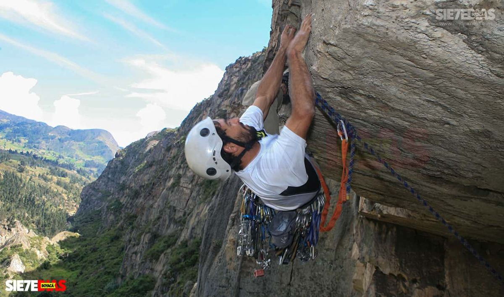

Agua
Ríos, lagos, cascadas y embalses.
Rafting, canotaje, torrentismo, kayak y kitesurf.
10 lugares · 5 regiones
Se recomienda saber nadar
Ver actividades de AguaTurismo extremo en Boyacá
Explora actividades extremas en Boyacá por elemento: agua, tierra o viento.

Ríos, lagos, cascadas y embalses.
Rafting, canotaje, torrentismo, kayak y kitesurf.
10 lugares · 5 regiones
Se recomienda saber nadar
Ver actividades de Agua
Cuevas, paredes de roca, desiertos y alta montaña.
Escalada, espeleología, rápel, ciclomontañismo y trekking.
12 lugares · 4 regiones
Incluye cuevas y espacios cerrados
Ver actividades de Tierra
Vuelos y recorridos suspendidos en el aire.
Parapente, canopy, tirolinas y kitesurf.
11 lugares · 6 regiones
Actividades en altura
Ver actividades de VientoSi algo no es para ti —como las alturas— descártalo desde el inicio.
Dificultad, seguridad, ubicación y fotos reales.
Lleva tu propia lista de sitios visitados en “Mis lugares”.
Cuéntanos qué lugar o actividad deberíamos agregar, o si algún dato está desactualizado.